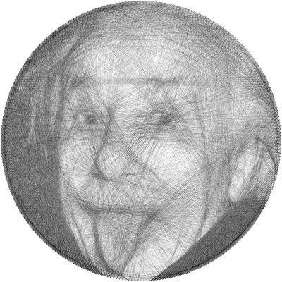

SpaceX (Starlink)
Integration & Test Specialist, Bus & Payload Sub-AssembliesRedmond, WA
- Production support, test-failure triage, and process improvement for Starlink satellite bus and payload sub-assemblies.
Mechanical engineer on the integration and test team for Starlink satellite bus and payload sub-assemblies at SpaceX. Earlier work includes wire harness design for utility-scale solar projects, PCB design, embedded control, and Simulink modeling. Led a team that designed and built a high-power rocket with active roll control.
Integration & Test Specialist, Bus & Payload Sub-AssembliesRedmond, WA
Design Engineer I
Undergraduate Research Assistant
Controls & Electronics Engineer
Mechanical Engineer Intern
Team Lead
L. A. Rodriguez, A. Kopplin, B. J. Slaboch, T. Vaculik
Proceedings of the American Control Conference, pp. 2181–2188.
Python, NumPy

Python, NumPy, Matplotlib
Bachelor of Science in Mechanical Engineering